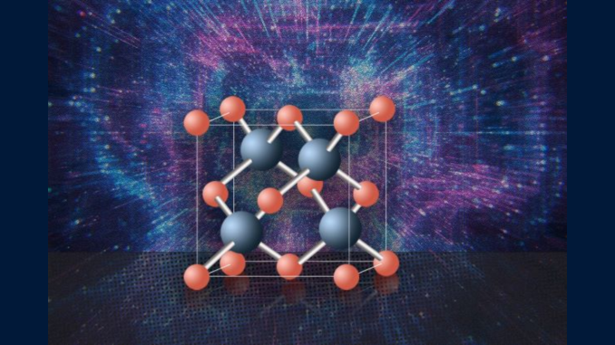

Kübik Bor Arsenit Silikona Meydan Okuyor
Kubik Bor Arsenit Silikona Meydan Okuyor - Güç küpü: Araştırmacılara göre, kübik bor arsenit şimdiye kadar keşfedilmiş en iyi yarı iletken malzeme ve muhtemelen mümkün olanın en iyisi. (Christine Daniloff ve MIT'ye teşekkürler)
Şu anda geliştirilmekte olan en iyi yarı iletkenlerden biri olan
kübik bor arsenit, çağdaş elektronikte ana malzeme olarak
silikonun yerini alma potansiyeline sahiptir.
Massachusetts Teknoloji Enstitüsü’nden Gang Chen ve Pekin,
Çin’deki Ulusal Nanobilim ve Teknoloji Merkezi’nden Xinfeng Liu
liderliğindeki ekipler tarafından yapılan bu keşif, malzemenin
küçük, saf bölgelerinin, silikon da dahil olmak üzere şu anda
popüler olan yarı iletkenlerden önemli ölçüde daha yüksek termal
iletkenlik ve yük taşıyıcı hareketliliği sergilediğini gösteren
deneylerle destekleniyor.
Bulgular teorik hipotezleri destekliyor ve kübik bor
arsenidin en azından teoride elektronik alanında devrim yaratma
potansiyeline sahip olduğunu gösteriyor.
Silikon, uzun yıllar boyunca elektronik sektörüne hakim olmuştur.
Yerkabuğunda en bol bulunan elementlerden biri olması, büyük
ölçekte kullanımını mali açıdan uygun hale getirmektedir. Ayrıca,
sağlam ve güvenilir elektriksel özellikler için çok önemli bir
ihtiyaç olan, neredeyse tamamen homojen bir moleküler kafese sahip
bir malzemeye saflaştırılması oldukça basittir
Ancak, silikonun yarı iletken olarak performansı ideal olmaktan
uzaktır. Bilgi ile ilgili iki sorun vardır.
Elektronlar bir yarı iletkenin yalıtkan (valans) bandından
iletim bandına sürüldüğünde, arkalarında “delikler” olarak bilinen
ve hareketli olan pozitif yük alanları bırakırlar.
Son teorik araştırmalar, kübik bor arsenidin (c-BA) çok daha
istenen özelliklere sahip olacağını öngörmektedir. Bu
simülasyonlar, malzemenin benzersiz kimyasal bağlanma
özelliklerinin, silikonunkinden yaklaşık on kat daha fazla termal
iletkenliğe sahip bir malzeme ile sonuçlanacağını öngörmektedir.
Oda sıcaklığında, teorisyenler tarafından yüksek elektron ve delik
hareketliliği de beklenmektedir. Ancak, deneyler bu cesaret verici
tahminleri henüz doğrulamamıştır.
Sorun, mevcut üretim tekniklerinde c-BA kristallerinin sıklıkla
yüksek, düzensiz kusur konsantrasyonlarına sahip olması ve bunun
da beklenen davranıştan önemli sapmalara yol açmasıdır. İki ekibin
üyeleri, Science dergisinde arka arkaya yayınlanan makalelerde
ayrıntıları verilen en son deneylerde, ince c-BA örnekleri
içindeki kirletici maddelerin dağılımını hassas bir şekilde
haritalamak için spektroskopik tekniklerin bir karışımını
kullandılar. Bu sayede belirli homojenlik alanlarını ve safsızlık
içermeyen moleküler kafesleri tespit edebildiler. Malzemenin yarı
iletkenlik özellikleri, ilk prensip simülasyonlarından tahmin
edilenlerle karşılaştırılabilir olan termal iletkenlik ve delik
hareketliliği için olağanüstü değerlerle, bu konumlarda şimdiye
kadar gözlemlenen en büyükler arasındaydı. Bu cesaret verici
bulguya rağmen, c-BA’nın gerçekten silikonun yerini alıp
alamayacağı hala belirsiz.